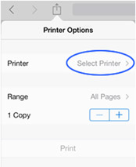
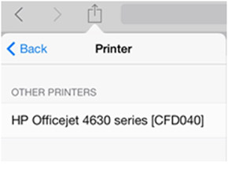
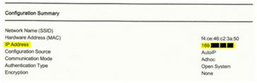

123 HP OFFICEJET 4653 DRIVER DOWNLOAD
Installing the driver form Windows Devices and Printers
- The network cable should be connected to your printer.
- Ensure that your printer IP address or hostname is available.
- Devices and Printers should be opened.
- Locate the printer,Choose Add a printer
- In Windows 8 / 8.1, choose the printer you want isn’t listed when Windows is searching for printers that are available.

- Choose the Add a local printer option
- Choose Create a new port, choose HP Standard TCP/IP Port option from the drop-down menu and then choose Next.
- Enter the printer IP address (or Printer host name) and then choose Next.
- Choose HP from the Manufacturer list and then scroll through the list to locate your printer.
- Choose the printer driver and then choose Next.
- Use the default or enter a new printer name and choose Next.
- Choose Set at the default printer and then choose Print a test page, or choose Finish to complete the installation process and close the window.
123 HP OFFICEJET 4653 SETUP MOBILE PRINTING
123 HP Officejet 4653 Google Cloud Print setup
Using Google Cloud Print, you can print documents, email, images and web pages from one’s computer or mobile phone.
Print a document or image that are stored on your computer.
- Access the Chrome browser , and then log in to your Google account.
- Go to Google Cloud Print Jobs.
- ClickPrint, andthen choose Upload file to print, and then click Select a file from my computer.
- Choose the document that you need to print, and then click Open.
- Under the Google Cloud Print Window, choose your printer, and then click Print.
- Alter print settings if required, and click Print again.
Print from Gmail
- Access the Chrome browser , and then log in to your Google account.
- Open the email that you need to print.
- Click the Print icon .
- Click the Change button which is in the Print window below Destination.
- Then choose your corresponding printer from the Select destination window which is under Google Cloud Print.
- In the Print window, alter any print settings, and click Print.
123 HP Officejet 4653 non-eprint Setup
To print from your Google driver or Google account, you must register your printer on Chromebook first.
- After turning on your printer, make sure that it is connected to the same Wireless network or Ethernet connection as your Chromebook.
- Open Chrome browser on your system and open Chromebook. Click on Menu and open Settings.
- Click on Show Advanced Settings and select Google Cloud Print.
- Select Manage and in the window that opens, browse for your printer model.
- Check the box next to your printer and select Add Printer. This will register your printer on Chromebook.
Print from Gmail
-
- From Chromebook open your Gmail account.
- Open the required email and click on the Chrome menu button.
- From the list of options displayed, select Print. The Google Cloud Print window will be opened. Select your corresponding printer under this window.
- Modify the settings of your print according to the requirements under Print Settings. Save the settings and proceed to Print.
Print Documents from your mobile device:
-
- In the HP e-Print app, open Files, Select the corresponding file type and click on the required document.
- In the HP e-Print app, open Files, Select the corresponding file type and click on the required document.
-
-
-
-
-
- The printer’s email address should be typed in the To: field.
- A subject should be typed in the subject line. A blank email subject line may lead the HP ePrint server to stop the print job.
-
-
-
-
-
- The total size of the email should be within 10 MB, together with attachments.
- For an email print job – Not more than 10 attachments.
- The listed document file types are only supported: text (.txt), PDF, HTML, Microsoft Word (.doc and .docx), Microsoft PowerPoint (.ppt and .pptx), and Microsoft Excel (.xls and .xlsx).
- The listed photo types are only supported: .bmp, .gif, .gif, .jpg, .png, and .tiff.
- Photos should have a horizontal and vertical resolution of 100 pixels or higher.
- HP ePrint does not support digitally signed, encrypted, or password protected documents.
- HP ePrint does not support OpenOffice files.
- Duplex printing (double-sided printing) is not supported by HP ePrint.
- When you print the email attachments, the email will also get printed.
- Time stamps which are from the HP ePrint server do not exactly reflect when the print job was created or printed.
-
-
-
-
-
-
- In the app that you need to print from, touch the Action icon(or) in order to display the menu options.
- Touch Print. The Printer Options menu gets displayed.
- 
In the Printer Options menu, touch Select Printer. Available printers list gets displayed.
- Touch the HP ePrint printer in the drop-down menu. Again the Printer Options menu gets displayed and shows the selected printer.
- Incase if there is no need to alter the print options, touch Print to send the print job to the HP printer.
- Incase if you need to alter the print options, go to the next step.
-
-
-
-
-
-
-
- Both the wireless router and printer should support WPS pushbutton method.
- The wireless router should have a physical WPS pushbutton available.
- The network should use either WPA2 or WPA security. Many WPS wireless routers will not connect using the WPS method if WEP or no security is used
- Many WPS wireless routers may not connect using the WPS method if the manufacturer’s default is used as the network name and no security is used.
-
-
-
-
-
-
-
- In order to use this option, software for your printer must be installed and the instructions provided on the screen should be followed meticulously.
- When prompted, choose the Network (Ethernet/Wireless)connection type and then select Yes, send my wireless settings to the printer (recommended)
- HP software will now complete the wireless connection process automatically.
- The computer that is used must have Mac OS X 10.5 (and newer) or Windows Vista (and newer).
- The computer must have a wireless connection to the network and the operating system should be in control of the wireless adapter so that the HP software may retrieve the computer’s current network settings.
- The computer should be connected to the network over 2.4 GHz.The computer must not use a static IP address.
-
-
-
-
-
-
-
- Open Windows and search for devices. Open Devices and Printers from the results shown.
- Click on the option Add a Printer.
- A window will be displayed titled Choose a device or printer to add to this computer.
- If your printer is displayed in the list and click on Next. Follow the instructions displayed on screen to setup and install the driver in order to use your printer.
- If your printer has not been listed, proceed with the steps given below in the document.
- Click on the tab My Printer wasn’t listed and then click Add a local Printer or network printer with manual settings.
- Select the option Use an existing port (USB: Virtual Printer Port for USB) and then click on Next.
- Open Windows Update and let the print drivers to get updated.
- Click on Next and using the instructions displayed, proceed to install the driver on your printer.
- Remove the USB cable from the computer and reconnect it again. Use your printer top check its functionality.
-
-
-
-
-
-
-
- Ensure that you have the network name and security password (WPA, WEP or WPA2)
- In the control panel of the printer, navigate to the Network menu or tap the wireless icon and then navigate to settings. Choose Wireless Setup Wizard.
- The Wireless Setup Wizard will display a list of wireless networks available in the area.
-
-
-
-
-
-
-
- Choose your wireless network’s name from the list.
- If you are unable to see your wireless network listed, then you can input your network name manually by navigating to the list’s bottom. When the name is entered manually, it should be exact and must include lower case and upper case characters.
- Input your WPA passphrase or WEP key. Input the passphrase or key exactly, including lower case and upper case characters. The printer must connect to the wireless network. If it does not get connected, you can print a Wireless Network Test report to assist you in finding what went wrong with the connection process.
-
-
-
-
-
-
-
- Make sure your HP printer is ready and is idle.
- Keep your HP Printer turned on and detach the power cord from the rear of the printer.
- Take off the power cord which is plugged in to the wall outlet.
- Hold on for at least 60 seconds.
- Plug in the power cord to the wall outlet now.
- Reinsert the power cord to the rear of the HP printer.
- The printer will turn on automatically, if it does not then press the Power button to turn it on.
- Try printing now and see what happens.
- If the printer functions properly, you can stop implementing the next step.
- If the print job stuck again, continue to the next step.
-
-
-
-
-
-
-
- Turn on your printer if it is not powered on before, by pressing the Power button.
- The carriage moves to the center of the printer when you open the access door of the cartridge. Ensure that your printer remains idle and silent before you proceed to the next step.Note: Do not touch the ink nozzles (copper-colored contacts), as it may result in ink failure, clogs, and poor electrical connections.
- If you see any unclear nozzles covered with a protective tape, remove it. Do not remove the copper electrical strip.
- Reinsert the cartridges into its slot by holding its sides with the nozzles towards the printer. Ensure the cartridge is inserted into its respective slot.
- Push the cartridge to the far end of its slot, so that it snaps into its place.
- Repeat the above step, if you have more than one cartridges on your printer.
Close the access door of the cartriage.
-
-
-
-
-
-
-
- Search for Print on your Mac computer, click Print & Fax, Print & Scan, or Printers & Scanners in the list of menus.
- From the list of devices, find your HP Printer that shows your status idle.
- Remove all other printer queues which matches your printer by selecting them all one at a time and then clicking the minus button at the bottom of the list. Leave out the ‘idle’ printer in the available list that matches your HP printer and use this printer as the Default printer.
- Try printing any file now.
- If the printer functions, you can skip all the other steps.
- If the printer persists to be in offline or displays an error, proceed to the next step.
-
-
-
-
-
-
-
- Select the Windows icon and open All Programs and select the folder labelled HP. Open the folder labelled with your printer series and select your printer by clicking on the printer icon.
-
-
-
-
-
-
-
- Swipe the cursor to the upper right or lower right of the screen or to the right side corner of the screen and open the Charms bar.
- Click on the search
- In the search box that opens, enter the printer model number and click on Enter. Double click on the icon of your printer.
- Select the option Scan a Document or Photo.
- Choose the corresponding scan size for your scan job from the menu displayed.
- Choose the corresponding file type from your File type menu, like PDF.
- Proceed to scan.
-
-
-
-
-
-
-
- Follow the path Macintosh HD/ Applications/ Hewlett- Packard, and then open the HP Scan icon by double clicking on it.
- In the upper right corner of your screen, click on the Scan option.
- Use the down arrow to modify and change the size and file type for your scan settings.
- Click on Continue to proceed with the scan.
- After the scan has been completed, click on Done.
-
-
-
-
-
-
-
- Switch off the computer, the product and the router.
- All computers connected over the network must be switched off, the error can be caused by any of them.
- After some time, switch on all the devices again and try to scan.
- If the error persists, continue troubleshooting.
-
-
-
-
-
-
-
- Print the Wireless Network Test Report and locate the IP address on it.
- In the address bar of your browser, enter the IP address to open the EWS webpage.
- Open the scanner lid and place the document along the engraved guidelines on the scanner glass.
-
-
-

HP Officejet 4653 eprint
Print with HP ePrint
The HP ePrint service takes care of printing jobs by sending documents and photos securely to the printer by email. One can even send print jobs from their computer, laptop, or smartphoneif you have an active Internet connection and an email account.
Ensure to study the following HP ePrint email requirements before you print:
Email subject lines will not be printed.

HP Officejet 4653 Airprint
By using an Apple AirPrint how do one can send a print job?
To print from one’s Apple mobile device to their local HP printer with AirPrint go through these steps.
Selecting the printer
Note: Some apps may not provide a print option because the app is not presently compatible with AirPrint. Incase if Print is not available, then you will not be able to print from that specific app with AirPrint.
HP OFFICEJET 4653 WIRELESS PROTECTED SETUP
WPS has two methods in order to connect devices together on a wireless connection. One method is known as the pushbutton and the other method is known as PIN. Pushbutton method is the easier of the two.
Please find below instructions to connect using the WPS pushbutton method.
PUSHBUTTON MODE
Requirements that need to be met in order to use the WPS pushbutton method:
HP OFFICEJET 4653 AUTO CONNECT
All recent HP printer models receive this capability during the course of the standard software installation procedure.
HP OFFICEJET 4653 CONNECT USING USB
HP OFFICEJET 4653 WIRELESS SETUP
Please note that Settings can be accessed by tapping a wrench icon, based on the printer model.
123 HP OFFICEJET 4653 DRIVER TROUBLESHOOTING
RESET HP OFFICEJET 4653 PRINTER
Resetting your HP Printer lets you to reset the stored values in the firmware. When there is a lack of communication between the printer and the Mac computer, a power reset can help you enhance the communication.
123 HP Ink Cartridges
123 HP Printer Tray
Remove multiple printers from the printer list
Look for the printer devices that you have used previously in the printers list and then remove the other devices other than one in idle status.
123 HP OFFICEJET 4653 SCAN
Windows 7
Windows 8
Use the steps given below to choose the corresponding paper size for your document. The steps given are separately provided for both Windows and Mac OS X.
Mac OS X version 10.6, version 10.7 and version 10.8
123 HP OFFICEJET 4653 SCAN CONNECTIVITY ISSUES
HP OFFICEJET 4653 WIRELESS SCANNING ISSUE
Use the Embedded Web Server to scan
-
-
-
-
-
-
-
-
-
-
-
-
-
- Place the piece on the scanner glass along the engraved guidelines or place it in the ADF (Automatic Document Feeder) based on the type and features of your printer.
- Under Devices, locate your printer and open the HP Printer Assistant.
- Click on Scan a Photo or Document to open the HP Scan window.
- Check your file type and choose the shortcut that corresponds with it and the desired action.
- Click on Show Scan Preview if needed and make any additional changes before you proceed.
- To alter settings like color and paper quality, click on Advanced Settings.
- Click on Scan and then click on Save. In the Save as window that opens, choose the required folder and enter the File name. Check the file type under the Save as type window and then click on Save.
-
-
-
-
-
HP OFFICE 4653 WIRED SCANNING ISSUE
Scanning a photo or document using the HP Scan Software
-
-
-
-
-